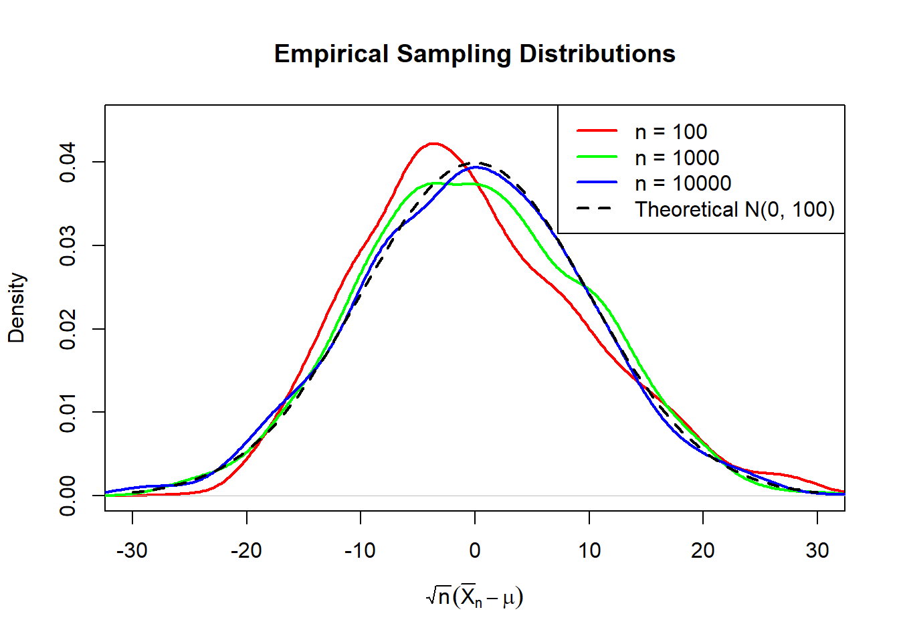
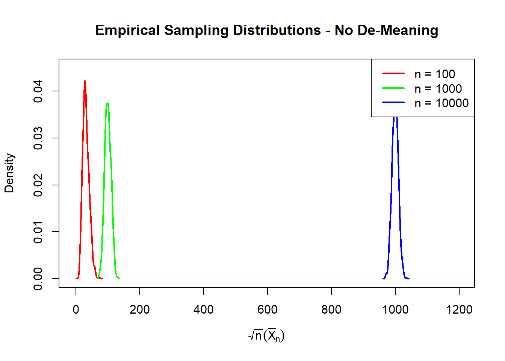
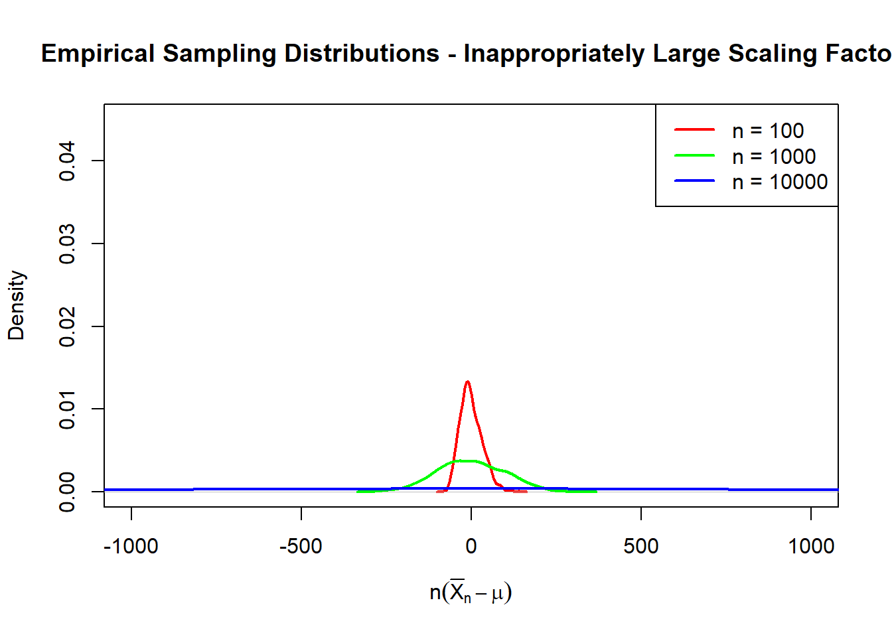
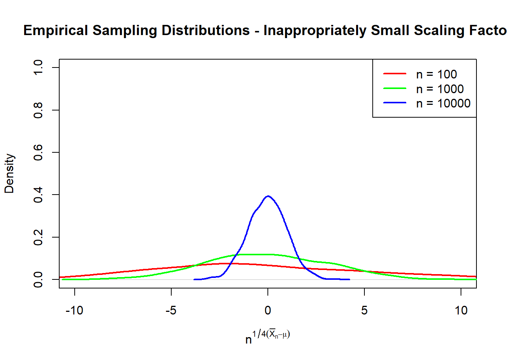

We should start by making something very clear, there is no single central limit theorem, rather there are multiple central limit theorems, each connected via a common thread: the tendency of the distribution of a sample mean to converge to a Normal distribution. When students first learn about “the Central Limit Theorem”, chances are that they are actually learning about the Lindeberg–Lévy Central Limit Theorem . This is the first central limit theorem that we will consider, but before we do so it may serve us well to first establish some statistical background on random variables, sample statistics, and sampling distributions.
Statistical Background: Random Variables, Sample Statistics, and Sampling Distributions
Lindeberg–Lévy CLT aka Classical CLT
The Lindeberg–Lévy CLT is formally stated as:
Lindeberg–Lévy CLT
Suppose \(X_1, ..., X_n\) is an i.i.d sequence of random variables with \(\mathbb{E}[X_i] = \mu\) and \(Var(X_i) < \infty\) for all \(i = 1,...,n\). Let \(\bar{X}_n = \frac{1}{n}\sum_{i=1}^n X_i\) denote the sample mean. Then, as \(n\) approaches infinity, the random variables \(\sqrt{n}\left(\bar{X}_n - \mu\right)\) converge in distribution to a normal \(\mathbb{N}\left(0, \sigma^2\right)\) distribution.
In words this theorem is telling us that if we have some i.i.d. sample of observations \(X_1,...,X_n\), then an appropriately scaled and de-meaned transformation of the sample mean will converge to a Normal distribution as the sample size grows. Notice how the theorem makes no assumption about the underlying distribution that the data (the observations \(X_1,...X_n\)) comes from? This makes the CLT particularly useful as data that might be generated from some highly intractable and otherwise nasty looking generating process can still be treated through the soft gloves on the Normal distribution, when properly handled.
Before we proceed to pick apart the assumptions buried in the formal statement, let us now have a look at the central limit theorem in action.
The chunk of code immediately below generates i.i.d. samples of data (of predetermined size, \(n\)), where each observation is drawn from an exponential distribution with mean/scale parameter \(\theta = \frac{1}{\lambda} = 10\). The sample mean \(\bar{X}_n\) is then calculated, and appropriately scaled and de-meaned as required by the CLT. This process is repeated for \(1,000\) iterations, so that we may plot an empirical estimate of the sampling distribution of this appropriately scaled and de-meaned random variable that we have created.
# Setting the seed for reproducibilityset.seed(3294764)# The number of replications in the simulationK <-1000# The different sample sizes to considern <-c(10, 100, 10000)# The mean/scale parameter of the exponential distribution that will generate# the datatheta <-10# Store the simulated sampling distributionsRV.list <-list()for(i in1:length(n)) { n.i <- n[i] RV <-numeric(K)for(j in1:K) {# Generate iid exponential observations X <-rexp(n.i, rate =1/theta)# Calculate sample mean bar.X.n <-mean(X)# Scale and de-mean RV[j] <-sqrt(n.i) * (bar.X.n - theta) } RV.list[[i]] <- RV}# Plot the first empirical densityplot(density(RV.list[[1]]),col ="red",lwd =2,xlim =c(-30, 30),ylim =c(0, 0.045),main ="Empirical Sampling Distributions",xlab =expression(sqrt(n)(bar(X)[n] - mu)),ylab ="Density")# Add the other empirical densitieslines(density(RV.list[[2]]),col ="green",lwd =2)lines(density(RV.list[[3]]),col ="blue",lwd =2)# Add theoretical N(0, 100) densitycurve(dnorm(x, mean =0, sd = theta),add =TRUE,col ="black",lwd =2,lty =2)# Add legendlegend("topright",legend =c("n = 100","n = 1000","n = 10000","Theoretical N(0, 100)"),col =c("red", "green", "blue", "black"),lwd =2,lty =c(1, 1, 1, 2))

If the Lindeberg–Lévy CLT is to be believed 1, then we would expect that this random variable that we have constructed by 1. generating a sample of \(n\) i.i.d observations from an Exp(= 10) distribution, 2. demeaning the sample mean, 3. scaling this demeaned sample mean, should converge to a \(N(0, 100)\) distribution as the sample size \(n\) increases. Sure enough, we see just that.
Now that you are (hopefully) sufficiently convinced of the veracity of the Lindeberg–Lévy CLT it is time to consider the assumptions that underpin this theorem more closely.
Lindeberg–Lévy CLT Assumptions
The new random variable must be de-meaned.
The new random variable must be appropriately scaled (by \(\sqrt{n}\)).
The data is independently and identically distributed (i.i.d).
\(\mathbb{E}[X_i] = \mu \quad \forall i\).
\(Var(X_i) = \sigma^2 < \infty \quad \forall i\).
Let us tackle these in order.
De-Meaning
First, the new random variable that we are creating must be de-meaned. Strictly speaking, this is not an assumption as much as it is a directive, but I digress. This step necessary so that this new random variable will converge in distribution to a Normal distribution with mean \(0\). Consider \[
\begin{align*}
\mathbb{E}[\bar{X}_n] &= \mathbb{E}\left[\frac{1}{n}\sum_{i=1}^nX_i\right] &&\quad \text{by definition of } \bar{X}_n\\
&= \frac{1}{n} \mathbb{E}\left[\sum_{i=1}^n X_i\right] &&\quad \text{since } \frac{1}{n} \text{ is a constant.}\\
&= \frac{1}{n} \sum_{i=1}^n \mathbb{E} [X_i] &&\quad \text{by the additivity property of expectation}\\
&= \frac{1}{n} \sum_{i=1}^n \mu &&\quad \text{by the assumption that } \mathbb{E}[X_i] = \mu, \, \forall i\\
&= \frac{1}{n} \times n \times \mu\\
&= \mu.
\end{align*}
\] Hence, for our new random variable, \(\sqrt{n}\left(\bar{X}_n - \mu\right)\), we have \[
\begin{align*}
\mathbb{E}\left[\sqrt{n}\left(\bar{X}_n - \mu\right)\right] &= \sqrt{n} \mathbb{E}\left[\bar{X}_n - \mu\right] &&\quad \text{since } \sqrt{n} \quad \text{is a constant}\\
&= \sqrt{n} \left(\mathbb{E}[\bar{X}_n] - \mathbb{E}[\mu]\right) &&\quad \text{by the additivity property of expectation}\\
&= \sqrt{n} \left(\mu - \mu\right) &&\quad \text{using the result that } \mathbb{E}[\bar{X}_n] = \mu \\
&= 0.
\end{align*}
\] And so, the mean of the new random variable is in fact zero. If instead we did not de-mean this new random variable, then we would have \[
\begin{align*}
\mathbb{E}\left[\sqrt{n}\bar{X}_n\right] &= \sqrt{n}\mathbb{E}[\bar{X}]_n &&\quad \text{since } \frac{1}{n} \text{ is a constant} \\
&= \sqrt{n}\mu &&\quad \text{using the result that } \mathbb{E}[\bar{X}_n] = \mu.
\end{align*}
\] This is problematic because now the distribution that the new random variable is supposed to be converging to actually depends on the sample size, \(n\), which asymptotically grows towards infinity. Hence, there is not a stable distribution to converge towards.
This chunk of R code below demonstrates what would happen if we did not conduct this all-important de-meaning process.
# Setting the seed for reproducibilityset.seed(3294764)# The number of replications in the simulationK <-1000# The different sample sizes to considern <-c(10, 100, 10000)# The mean/scale parameter of the exponential distribution that will generate# the datatheta <-10# Store the simulated sampling distributionsRV.list <-list()for(i in1:length(n)) { n.i <- n[i] RV <-numeric(K)for(j in1:K) {# Generate iid exponential observations X <-rexp(n.i, rate =1/theta)# Calculate sample mean bar.X.n <-mean(X)# Scale and de-mean RV[j] <-sqrt(n.i) * (bar.X.n) } RV.list[[i]] <- RV}# Plot the first empirical densityplot(density(RV.list[[1]]),col ="red",lwd =2,xlim =c(-5, 1200),ylim =c(0, 0.045),main ="Empirical Sampling Distributions - No De-Meaning",xlab =expression(sqrt(n)(bar(X)[n])),ylab ="Density")# Add the other empirical densitieslines(density(RV.list[[2]]),col ="green",lwd =2)lines(density(RV.list[[3]]),col ="blue",lwd =2)# Add legendlegend("topright",legend =c("n = 100","n = 1000","n = 10000"),col =c("red", "green", "blue"),lwd =2,lty =c(1, 1, 1, 2))

We can see that these empirical sampling distributions are indeed centered at \(\sqrt{n}\mu\) where \(\mu = \theta = 10\) and \(n \in \left\{100, 1000, 10000\right\}.\) To say that the new random variables are “converging” to a \(N(10\cdot\sqrt{n}, \sigma^2)\) distribution is not quite correct. The notion of mathematical convergence in distribution implies that the distribution that we are converging to is “free” from any terms that involve \(n\). Instead, we might say that these random variables, \(\sqrt{n}\cdot \bar{X}_n\), appear to be centered around their population means, \(\sqrt{n} \cdot \mu\).
Clearly, de-meaning matters.
Appropriately Scaled
Second, the new random variable must be appropriately scaled by the scaling factor \(\sqrt{n}\). This step in the process ensures that the new random variable, \(\sqrt{n} (\bar{X}_n - \mu)\), will converge to a Normal distribution with a constant (and finite) variance. Consider $$ \[\begin{align*}
Var\left[\sqrt{n} \cdot \left(\bar{X}_n - \mu\right)\right]
&= (\sqrt{n})^2 \cdot Var\left[\bar{X}_n - \mu\right]
&&\quad \text{since } \sqrt{n} \text{ is a constant} \\
&= n \cdot Var\left[\bar{X}_n\right]
&&\quad \text{since } \mu \text{ is a constant} \\
&= n \cdot Var\left[\frac{1}{n} \sum_{i=1}^n X_i \right]
&&\quad \text{by the definition of } \bar{X}_n \\
&= n \cdot \left(\frac{1}{n}\right)^2
\cdot Var\left[\sum_{i=1}^n X_i\right]
&&\quad \text{since } \frac{1}{n} \text{ is a constant} \\
&= \frac{1}{n} \cdot \sum_{i=1}^n Var\left[X_i\right]
&&\quad \text{since variance is additive whenever the random variables are independent} \\
&= \frac{1}{n} \cdot \sum_{i=1}^n \sigma^2
&&\quad \text{by assumption about } X_i \\
&= \frac{1}{n} \cdot n \cdot \sigma^2 \\
&= \sigma^2.
\end{align*}\] $$ And so, the new random variable has a constant (and finite) variance, which happens to be the same as the variance of the distribution that the data is drawn from (whatever that may be).
This scaling factor, \(\sqrt{n}\), is very particular. If instead we use a scaling factor that is too large, say \({n}\), then the variance of the distribution that the new random variable is supposed to be converging to will explode to infinity. Observe that $$ \[\begin{align*}
Var\left[n \cdot \left(\bar{X}_n - \mu\right)\right]
&= n^2 \cdot Var\left[\bar{X}_n - \mu\right] \\
&= n^2 \cdot Var\left[\bar{X}_n\right] \\
&= n^2 \cdot Var\left[\frac{1}{n} \sum_{i=1}^n X_i \right] \\
&= n^2 \cdot \left(\frac{1}{n}\right)^2
\cdot Var\left[\sum_{i=1}^n X_i\right] \\
&= 1 \cdot \sum_{i=1}^n Var\left[X_i\right] \\
&= \sum_{i=1}^n \sigma^2 \\
&= n \cdot \sigma^2 \\
\end{align*}\] $$ which explodes towards infinity as the sample size \(n\) approaches infinity.
If instead we use a scaling factor that is too small, say \(n^{1/4}\), then the variance implodes towards 0. While this might not sound like a big deal at first pass (after all, aren’t smaller variances “better”?), this is problematic for a couple of reasons. One, as we previously mentioned, it is not mathematically correct to say that the limiting distribution is a function of the asymptotically growing sample size, \(n\), which is the case the scaling factor is too small. Two, it means that the sampling distribution is not a distribution but rather a single point mass at \(0\). This makes it….rather difficult….to conduct statistical inference. Ask yourself, how might we quantify the uncertainty of a statistic if we have forced the statistic to squash itself down into a point mass?
The following R code chunk demonstrates empirically what happens when the scaling factor is inappropriately large, using our familiar simulation setup.
# Setting the seed for reproducibilityset.seed(3294764)# The number of replications in the simulationK <-1000# The different sample sizes to considern <-c(10, 100, 10000)# The mean/scale parameter of the exponential distribution that will generate# the datatheta <-10# Store the simulated sampling distributionsRV.list <-list()for(i in1:length(n)) { n.i <- n[i] RV <-numeric(K)for(j in1:K) {# Generate iid exponential observations X <-rexp(n.i, rate =1/theta)# Calculate sample mean bar.X.n <-mean(X)# Scale and de-mean RV[j] <- n.i * (bar.X.n - theta) } RV.list[[i]] <- RV}# Plot the first empirical densityplot(density(RV.list[[1]]),col ="red",lwd =2,xlim =c(-1000, 1000),ylim =c(0, 0.045),main ="Empirical Sampling Distributions - Inappropriately Large Scaling Factor",xlab =expression(n(bar(X)[n] - mu)),ylab ="Density")# Add the other empirical densitieslines(density(RV.list[[2]]),col ="green",lwd =2)lines(density(RV.list[[3]]),col ="blue",lwd =2)# Add legendlegend("topright",legend =c("n = 100","n = 1000","n = 10000"),col =c("red", "green", "blue"),lwd =2,lty =c(1, 1, 1, 2))

We can see that, as we simulate with a larger and larger sample size, the variance of the empirical sampling distribution explodes.
The following R code chunk demonstrates empirically what happens when the scaling factor is inappropriately small, using our familiar simulation setup.
# Setting the seed for reproducibilityset.seed(3294764)# The number of replications in the simulationK <-1000# The different sample sizes to considern <-c(10, 100, 10000)# The mean/scale parameter of the exponential distribution that will generate# the datatheta <-10# Store the simulated sampling distributionsRV.list <-list()for(i in1:length(n)) { n.i <- n[i] RV <-numeric(K)for(j in1:K) {# Generate iid exponential observations X <-rexp(n.i, rate =1/theta)# Calculate sample mean bar.X.n <-mean(X)# Scale and de-mean RV[j] <- n.i^(0.25) * (bar.X.n - theta) } RV.list[[i]] <- RV}# Plot the first empirical densityplot(density(RV.list[[1]]),col ="red",lwd =2,xlim =c(-10, 10),ylim =c(0, 1),main ="Empirical Sampling Distributions - Inappropriately Small Scaling Factor",xlab =expression(n^{1/4}(bar(X)[n] - mu)),ylab ="Density")# Add the other empirical densitieslines(density(RV.list[[2]]),col ="green",lwd =2)lines(density(RV.list[[3]]),col ="blue",lwd =2)# Add legendlegend("topright",legend =c("n = 100","n = 1000","n = 10000"),col =c("red", "green", "blue"),lwd =2,lty =c(1, 1, 1, 2))

As the sample size increases, the empirical sampling distributions begin to look increasingly like a point mass.
i.i.d.
Third, the data must be \(i.i.d\). This assumption is virtually ubiquitous in undergraduate (and many graduate) statistics courses. So much so that it is often left unquestioned. While we will not be discussing when this assumption is or is not appropriate today, it is worth investigating what happens when the data is not \(i.i.d\). The first \(i\) - identical}. Suppose the data is not identically distributed. Well, the Lindeberg–Lévy CLT requires that the data is identically distributed so that we can de-mean the new random variable that we are creating by subtracting the value of \(\mu\) - the common population mean for all the observations \(X_i\). Furthermore, the theorem asserts that the new random variable converges in distribution to a Normal distribution with mean zero and constant variance, \(\sigma^2\) where \(\sigma^2\) was the common population variance for all the observations \(X_i\). As it turns out, this condition is not strictly necessary, In fact, the Lndeberg-Feller 2 CLT explicitly drops this condition. Instead, it replaces it with a slightly more involved condition called the Lindeberg Condition}, which we will not be discussing here. To cut a long story short, the CLT does not fall apart, instead we must use \(\mathbb{E}[\bar{X}_n] = \frac{1}{n}\sum_{i=1}^n \mu_i\) to de-mean, and we must scale by \(Var(\bar{X}_n) = \frac{1}{n^2}\sum_{i=1}^n \sigma_i^2\). Suppose instead that the data is identically distributed, but that it is not independent} - the second \(i\) fails. This is slightly trickier. Now we have a dependent process, there is some correlation between each observation \(X_i,...,X_n\). While there are variants of the CLT that hold for dependent processes, we will restrict our attention to the Lindeberg–Lévy that we have discussed so far. Let us simulate this and see what happens.
Finite Mean
Finite Variance
Lyapunov CLT
For a majority of people everything that you could ever have wanted to know about the central limit theorem and more has already been covered by now. That is to say that you could stop reading here and be content. If, however, for some unbeknownst reasons you find yourself craving to learn more about the central limit theorem then I suppose that you may keep reading.
The Lyapunov CLT differs from the Lindeberg–Lévy CLT by removing the assumption of identically distributed data. It does, however, retain the assumption that the data is independent. This makes it rather similar to the Lindeberg–Feller CLT which was mentioned briefly above when discussing the i.i.d assumptions of the Lindeberg–Lévy CLT. Recall that the Lindeberg–Feller CLT also dropped the identically distributed assumption (and instead introduced the Lindeberg condition).
Again, it should be stressed that the Lyapunov CLT is still a central limit theorem; it makes an assertion about the asymptotic 3 distribution of some random variable that we construct by appropriately transforming the sample mean.